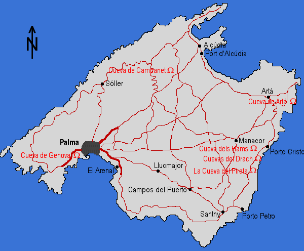

Mallorca
Majorca
The island of Mallorca has numerous caves and several show caves. The most famous show cave is the Cuevas del Drach, which means a lot of visitors! But the other caves are not so crowded and well worth a visit,
The first scientific cave explorations on Mallorca were done in 1896 by

Martel describes his discoveries in the Annales du CAF.

 Cuevas de Artá
Cuevas de Artá Cova Blava
Cova Blava- Cuevas de Campanet
- Cuevas del Drach
- Cueva de Genova
- Cuevas dels Hams
- La Grotte
 Cuevas de la Mare de Deu
Cuevas de la Mare de Deu- Cuevas del Pilar
- La Cueva del Pirata
- Cova des Pont
- La Cova de Sant Martí
- Cueva de S'avenc de Son Pou
Because of the southern location of Mallorca, the temperature of the caves lies between 16 and 20°C. So it may be a good idea, to visit a cave if the weather is too bad to bath!
- See also >